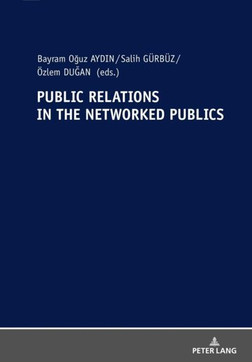
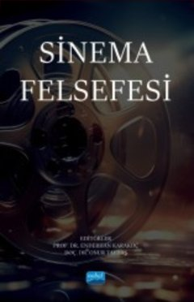

Akademisyen · Radyocu · Gazeteci
Doç. Dr. Salih Gürbüz
Necmettin Erbakan Üniversitesi, Radyo, Televizyon ve Sinema Bölüm Başkanı
Mikrofonun, kürsünün ve kalemin buluştuğu yerde tek bir soru var: İnsan, kendisiyle ve dünyayla nasıl konuşur? Yirmi beş yılı aşkın radyo yayıncılığı, gazetecilikten gelen kalem ve medya araştırmalarındaki akademik birikimle bu sorunun peşinde.
- İletişim psikolojisi
- Göstergebilim
- Medya ve söylem çözümlemesi
- Siyasal iletişim
- Halkla ilişkiler ve kurum imajı
- Sinema çalışmaları
Kitapları İletişimin Psikolojisi (2025), En Büyük Meselemiz: İlet-İşim (2022), Kurum İmajı (2017)
Yeni seri
Kısa Kısa İletişim Notları
Gündelik hayatın içinden, birkaç dakikada dinlenen iletişim notları. Dokunun, hemen başlasın.
Hakkında
Doç. Dr. Salih Gürbüz, Necmettin Erbakan Üniversitesi Güzel Sanatlar ve Mimarlık Fakültesi Radyo, Televizyon ve Sinema Bölümü'nün kurucu bölüm başkanıdır. Sosyal Bilimler Enstitüsü'nde Sinema ve Televizyon Tezli Yüksek Lisans Programı'nın anabilim dalı başkanlığını da yürütmektedir. Doktorasını Selçuk Üniversitesi'nde Halkla İlişkiler ve Tanıtım alanında tamamlamış, 2020'de doçent unvanını almıştır.
Araştırmalarının merkezinde medyanın anlamı nasıl ürettiği sorusu yer alır. Göstergebilim, eleştirel söylem analizi ve çerçeveleme kuramıyla film, haber ve sosyal medya metinlerini çözümler; kurum imajı, kriz iletişimi ve siyasal iletişim üzerine alan araştırmaları yürütür. Yirmi altı hakemli makalesi, Peter Lang yayınları dahil yirmi kitap bölümü, üç kitabı ve üç editörlü kitabı bulunmaktadır. Danışmanlığını üstlendiği on üç yüksek lisans tezi, sinemadan siyasal iletişime uzanan bir araştırma alanı oluşturur.
Bilgiyi kürsüyle sınırlamaz. 2004-2005'te Anadolu'nun Sesi dergisinin genel yayın yönetmenliğini yapmış, Hakimiyet ve Milli Gazete'de yazmış, Ribat dergisinde yazmayı sürdürmektedir. Radyo programları, YouTube kanalı ve TÜBİTAK destekli medya okuryazarlığı eğitimlerinden belgesel yapımına uzanan projeleriyle akademik birikimi toplumla buluşturur. Akademiye geçmeden önce on yıl Millî Eğitim Bakanlığında öğretmenlik yapmıştır.
- 2004-2005
- Anadolu'nun Sesi dergisi, genel yayın yönetmeni
- 2007-2017
- Millî Eğitim Bakanlığı, öğretmen
- 2016
- Doktora, Selçuk Üniversitesi, Halkla İlişkiler ve Tanıtım
- 2017
- Doktor öğretim üyesi; Radyo, Televizyon ve Sinema Bölümü kurucu bölüm başkanı
- 2020
- Doçent
- 2021
- Sinema ve Televizyon Tezli Yüksek Lisans Programı, anabilim dalı başkanı
- Kurum imajı
- Halkla ilişkiler
- Siyasal iletişim
- Sinema kuramları
- Dijital medya
- İletişim psikolojisi
- Eleştirel söylem analizi
- Radyo yayıncılığı
Dinle ve izle
İletişim Günlüğü kanalından seçilmiş kayıtlar. Oynat düğmesine bastığınızda liste sırayla çalar.
Kitaplar
Tek yazarlı ve editörlü kitaplar, kitap bölümleri.

En Büyük Meselemiz: İlet-İşim
Kişilerarası İlişkilerde ve Sosyal Medyada İletişim
Literatürk Academia, 2022


Editörlü kitaplar


Eleştirel Yaklaşımlar ve Analizler
Editörler: Salih Gürbüz, Bayram Oğuz Aydın, Enderhan Karakoç
Akademisyen Kitabevi, 2025
Satın al
Public Relations in the Networked Publics
Editörler: Bayram Oğuz Aydın, Salih Gürbüz, Özlem Duğan
Peter Lang, 2019
Satın alKitap bölümleri

Sinema Felsefesi
Nobel Akademik Yayıncılık

Sinema Toplum İlişkileri Üzerine Çözümlemeler
Nobel Akademik Yayıncılık

Siyasal İletişim: Teorik Tartışmalar
Nobel Akademik Yayıncılık

Siyasal İletişim: Uygulamalı Tartışmalar
Nobel Akademik Yayıncılık
Radyo ve YouTube
Akademideki soruları mikrofona ve ekrana taşıyan yayınlar.
Medya ve Çocuk
Hafta içi her gün, 16.00Repliklerle Terapi
68 bölümMedya: Görünenler ve Ötesi
20 bölümİletişim Meselesi
Program dizisi YouTube
İletişim Günlüğü
@iletisimgunlugu · Kanala git
YouTube
İletişim Günlüğü
@iletisimgunlugu · Kanala git
Yazılar
Kültür ve sanat dergilerinde yayımlanan yazılar ve söyleşiler.
- İletişimde Nezaket ve Konuşma Sanatının Yeri ve Önemi Ribat Dergisi
- Psikolojinin Işığında İletişim: Kendini Bilmek ve Başkalarıyla Bağ Kurmak Ribat Dergisi
- İletişim Kendini Bilmektir Ribat Dergisi
- Ramazan ve İletişim Ahlakı Ribat Dergisi
- Onaylanma Açlığından Sanal Yalnızlığa: Sosyal Medya Bağımlılığının Anatomisi Ribat Dergisi
- Metafizik Bir İletişim Formu Olarak İnsan Ribat Dergisi
- Hac İbadetinde ve Umrede İletişim Etiği Ribat Dergisi
- İletişim Cihadı: Söz, Anlam ve Modern Çağın Yeni Cephesi Ribat Dergisi
- Hissetmeden Anlaşılmaz: İletişimde Empati Ahlakı Ribat Dergisi
- Kibir İletişimi Nasıl Hasta Eder? Ribat Dergisi
- İnsan Eşittir İletişim Ribat Dergisi
- Takdir, Beğeni ve Gerçek Özgüvenin İletişime Etkisi Ribat Dergisi
- İletişim Dışarıda Değil, İçeride Başlar Gönül Dergisi · Söyleşi · Şubat 2026
- Etkili İletişimin Dinamikleri Gönül Dergisi · Söyleşi · Şubat 2023
Yayınlar
Yirmi altı hakemli makale ve yirmi kitap bölümünün tam listesi özgeçmişte. Güncel atıf ve hakemlik kayıtları akademik profillerde.
İletişim
E-posta
sgurbuz@erbakan.edu.tr
Instagram
@dr.salihgurbuz
YouTube
@iletisimgunlugu
Kurum
Necmettin Erbakan Üniversitesi
Güzel Sanatlar ve Mimarlık Fakültesi, Konya
Güzel Sanatlar ve Mimarlık Fakültesi, Konya